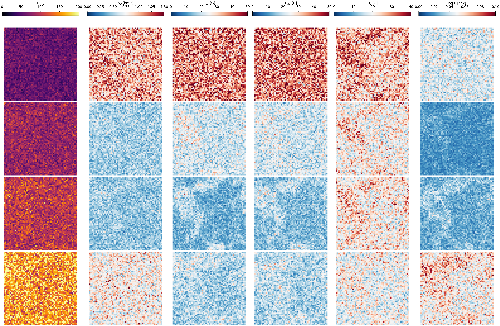
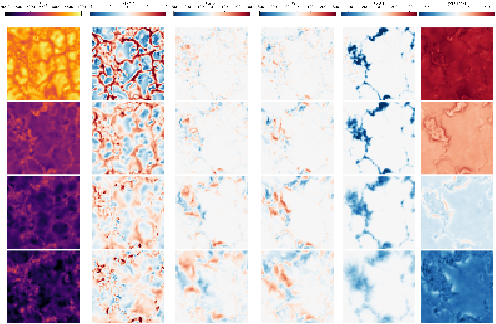

3DStokesFlow: simulation-based inference for 3D Stokes profiles using flow matching
Abstract
The standard interpretation of observed Stokes profiles to infer the physical conditions of the solar atmosphere is inherently an ill-defined problem due to observational noise and mathematical degeneracies. Traditional pixel-by-pixel (1D) inversion codes provide point estimates with unreliable uncertainties, at the expense of significant computational time. Recent machine-learning-based Bayesian frameworks are restricted to 1D spatial configurations, ignoring crucial spatial correlations between neighboring pixels.
We aim to develop a novel multidimensional inversion framework capable of performing fast and scalable Bayesian inference across an entire 2D field-of-view (FoV). This approach seeks to provide accurate height-dependent atmospheric parameters with reliable posterior distributions while exploiting spatial correlations.} % methods heading (mandatory) {We introduce a new generative modeling strategy based on conditional flow matching. The model utilizes multi-scale spatial features extracted from observed Stokes profiles in the Fe I line pair at 630 nm, which then conditions a flow matching generative model to sample from the complex posterior distribution of the atmospheric parameters. The framework is trained using realistic 3D quiet Sun magnetohydrodynamic simulations.
Validation on independent synthetic datasets demonstrates that the model accurately captures the true 3D stratification of all thermodynamic and magnetic parameters. Because the code additionally provides a geometrical height scale, it allows for the computation of 3D electric current density maps, Lorentz forces, and Ohmic and ambipolar dissipation maps in the solar photosphere. Application to real Hinode/SP quiet Sun observations yields highly localized electric currents at magnetic boundaries. We also leverage the 3D geometrical information to trace the emergence of small-scale emerging magnetic loops across the solar atmosphere.
Median of the .

Median of the .

Second image description.
BibTeX
@article{YourPaperKey2024,
title={Your Paper Title Here},
author={First Author and Second Author and Third Author},
journal={Conference/Journal Name},
year={2024},
url={https://your-domain.com/your-project-page}
}